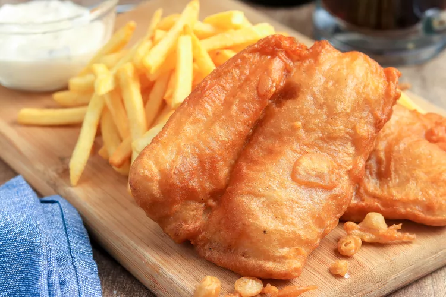

Fish & Chips Recipe

Description
Fish and chips is a popular and iconic dish that originated in the United Kingdom. It consists of crispy battered
fish fillets served with golden, deep-fried potato chips (French fries). This classic combination has become a
beloved staple in many countries around the world, especially in coastal areas. The contrast of the crispy
coating and the tender fish, along with the satisfying crunch of the chips, makes fish and chips a delightful
treat.
Ingredients
- 6 medium-sized potatoes, each cut into 8 wedges
- 1 1/2 cups (375 ml) unbleached all-purpose flour
- 2 tablespoons (30 ml) cornstarch
- 1 teaspoon (5 ml) salt
- 1/2 teaspoon (2.5 ml) baking powder
- 1 cup (250 ml) light beer
- 1 1/2 lb (675 g) haddock fillets, cut in half lengthwise, if necessary (or cod or turbot)
- Salt and pepper
- Oil, for frying
Instructions
- Preheat the oil, setting the deep fryer to 180 °C (350 °F). Place a wire rack on a baking sheet. Preheat the
oven to 100 °C (200 °F) to keep the fries warm in the oven while cooking the fish.
- Dip the potatoes in warm water to remove the starch. Drain and pat the potatoes dry in a clean cloth.
- Fry the potatoes for about 8 minutes or until tender and lightly browned. Drain the fries and place on the
rack. Let cool.
- In a bowl, combine 250 ml (1 cup) of flour with the cornstarch, salt, and baking powder. Gradually add the
beer, whisking until the mixture is smooth. Set aside.
- Put the potatoes back in the deep fryer and cook for 3 to 4 minutes or until golden brown. Remove from the
fryer and drain on the baking sheet. Sprinkle with salt and keep warm.
- Season the fish pieces with salt and pepper and dredge in the remaining flour. Shake to remove any excess.
Dip each piece in the batter and coat well. Drain and fry while shaking the basket for a few seconds to
prevent them from sticking to the bottom. Cook for about 5 minutes. Remove the fish and drain on a wire
rack.
Back To Recipes